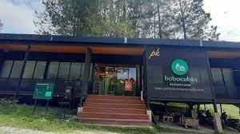
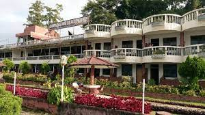

1. Thyesza Hotel
Thyesza Hotel memiliki kolam renang luar ruangan, taman, lounge bersama, dan teras, restoran, bar, dan Wi-Fi gratis. Semua kamar memiliki balkon yang dilengkapi dengan lemari pakaian, TV layar datar, kamar mandi pribadi, seprai, dan handuk. Sarapan prasmanan, Ã la carte, atau Asia tersedia setiap pagi di akomodasi. Daerah ini populer untuk memancing, dan penyewaan mobil tersedia di Thyesza Hotel. Liburan menjadi menyenangkan.

2. Bobocabin Signature Toba
Bobocabin Signature Toba, Medan menawarkan akomodasi di Parmonangan. Resor ini menawarkan pemandangan danau, teras, resepsionis 24 jam, dan Wi-Fi gratis. Setiap kamar di resor ini dilengkapi dengan meja. Kamar-kamarnya memiliki kamar mandi pribadi dengan bidet, perlengkapan mandi gratis, dan pengering rambut. Di Bobocabin Signature Toba, Medan, setiap kamar memiliki area tempat duduk. Liburan tak akan terlupakan.
3. Tiara Bunga Hotel
Tiara Bunga Hotel & Villa memiliki kolam renang luar ruangan, taman, lounge bersama, dan teras, restoran, taman bermain anak, dan layanan kamar. Tersedia parkir pribadi gratis dan akomodasi ini menawarkan layanan antar-jemput bandara dengan biaya tambahan. Sarapan Asia tersedia setiap pagi di resor. Daerah ini populer untuk memancing, dan penyewaan mobil tersedia di Tiara Bunga Hotel & Villa. Staf resepsionis dapat berbahasa Inggris serta Indonesia.
4.Ecovillage Silimalombu Homestay
Terletak di Pulau Samosir di wilayah Danau Toba. Dapat dijangkau dengan naik perahu dari pelabuhan Ajibata. Blok akomodasi dan aktivitas terletak di rumah kayu Batak tradisional, hanya di tepi danau. Lokasinya pribadi dan tenang, dan dikelilingi oleh hutan yang subur dan tanah pertanian di sekitar. Pemilik Ratnauli (asli Batak - Toba) dan Thomas (Jerman) adalah orang-orang yang sangat rendah hati, ramah yang bersemangat mempromosikan kehidupan yang berkelanjutan dan permakultur. Setibanya di farmstay, Anda mendapat sambutan hangat dari mereka, menunjukkan Anda di sekitar properti, serta berbagi apa yang mereka lakukan di Ecovillage.

5. Darma Agung Beach
Darma Agung Beach Hotel, mewarkan berbagai fasilitas dan kenyamanan. Kamar tamu menawarkan fasilitas seperti kulkas, dan tamu dapat terhubung dengan internet menggunakan akses internet yang ditawarkan oleh hotel. Darma Agung Beach Hotel menawarkan layanan kamar dan layanan concierge, sehingga pengalaman menginap Anda lebih menyenangkan. Properti ini juga menawarkan restoran di tempat. Jika Anda suka makanan Asia, Darma Agung Beach Hotel terletak dekat Restoran Istana Minang, LaToSu Cafe & Resto, dan WinTie Coffee Shop. Staf di Darma Agung Beach Hotel berharap dapat melayani Anda selama kunjungan Anda mendatang.
6. Danau Toba International Cottage Parapat
Danau Toba International Cottage Parapat Pelayanan memuaskan serta fasilitas hotel yang memadai akan membuat Anda nyaman berada di Danau Toba International Cottage Parapat. Tersedia kolam renang. Manjakan diri Anda dengan spa yang memberikan harga dan kualitas pelayanan terbaik. Resepsionis siap 24 jam untuk melayani kebutuhan Anda. Jangan ragu untuk menghubungi resepsionis, kami siap melayani Anda. Terdapat restoran yang menyajikan menu lezat ala Danau Toba International Cottage Parapat khusus untuk Anda. WiFi tersedia di seluruh area publik properti untuk membantu Anda tetap terhubung dengan keluarga dan teman.
7. Vandu's View Guest house Restaurant
Vandu's View Guest house & Restaurant menawarkan akomodasi dengan area tempat duduk di Tuk Tuk. Akomodasi ini menawarkan akses ke teras, parkir pribadi gratis, dan Wi-Fi gratis. Anda dapat menikmati pemandangan danau. Semua unit di guest house ini dilengkapi dengan teko. Teras dengan pemandangan pegunungan ditawarkan di setiap unit. Unit-unitnya memiliki kamar mandi pribadi, perlengkapan mandi gratis, dan seprai. Anda dapat bersantai di taman di akomodasi.
8. Samosir Cottages Resort
Samosir Cottages Resort adalah resor di lokasi yang baik, tepatnya berada di Tuktuk Siadong. Resepsionis 24 jam siap melayani Anda, mulai dari check-in hingga check-out, atau bantuan apa pun yang Anda perlukan. Jika Anda menginginkan lebih, jangan ragu untuk bertanya di meja depan, kami selalu siap mengakomodasi Anda. WiFi tersedia di area umum properti untuk membantu Anda tetap terhubung dengan keluarga dan teman.